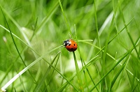
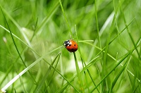

Un wiki fonctionne grâce à un moteur de wiki : c'est un logiciel installé sur le système hôte du site web. Identification des visiteurs Un wiki n'est pas forcément modifiable par tout le monde ; il peut exiger que les visiteurs s'inscrivent avant d'être autorisés à modifier les pages. Dans le cas des wikis qui sont complètement ouverts au public, diverses procédures techniques et sociales sont mises en œuvre pour limiter et annuler les modifications indésirables. Lorsqu'un wiki autorise des visiteurs anonymes à modifier les pages, c'est l'adresse IP de ces derniers qui les identifie ; les utilisateurs inscrits peuvent quant à eux se connecter sous leur nom d'utilisateur.
Un wiki fonctionne grâce à un moteur de wiki : c'est un logiciel installé sur le système hôte du site web.
Identification des visiteurs
Un wiki n'est pas forcément modifiable par tout le monde ; il peut exiger que les visiteurs s'inscrivent avant d'être autorisés à modifier les pages. Dans le cas des wikis qui sont complètement ouverts au public, diverses procédures techniques et sociales sont mises en œuvre pour limiter et annuler les modifications indésirables.
Lorsqu'un wiki autorise des visiteurs anonymes à modifier les pages, c'est l'adresse IP de ces derniers qui les identifie ; les utilisateurs inscrits peuvent quant à eux se connecter sous leur nom d'utilisateur.
Page Suivante
Quelques wikis proposent, au lieu du wikitexte, une interface d'édition WYSIWYG, citons par exemple Confluence et XWiki, ainsi que Wikipédia depuis juillet 2013.
Liens et création de pages
Les wikis favorisent la création d'hyperliens en simplifiant l'écriture et en n'imposant aucune contrainte organisationnelle. Ainsi, chaque page web contient de nombreux liens qui la relient à d'autres pages, sans structure hiérarchique apparente. Il existe des fonctionnalités pour classer, ou plus précisément retrouver les pages, mais elles ne sont pas indispensables. Le wiki devient donc un foisonnement de pages mises au même niveau et reliées les unes aux autres, selon la logique propre au contenu de chacune d'entre elles.
Originellement, les wikis utilisaient des MotsWiki (comme « CompteUtilisateur ») pour générer automatiquement des liens vers d'autres pages. Certains wikis ont des règles syntaxiques distinctes pour la création de liens, à l'exemple de MediaWiki où l'utilisateur emploie les crochets.
L'apparence des liens (par exemple leur couleur) varie selon qu'ils mènent à une page existante ou à une page encore inexistante, que l'utilisateur a, toutefois, la possibilité de créer.